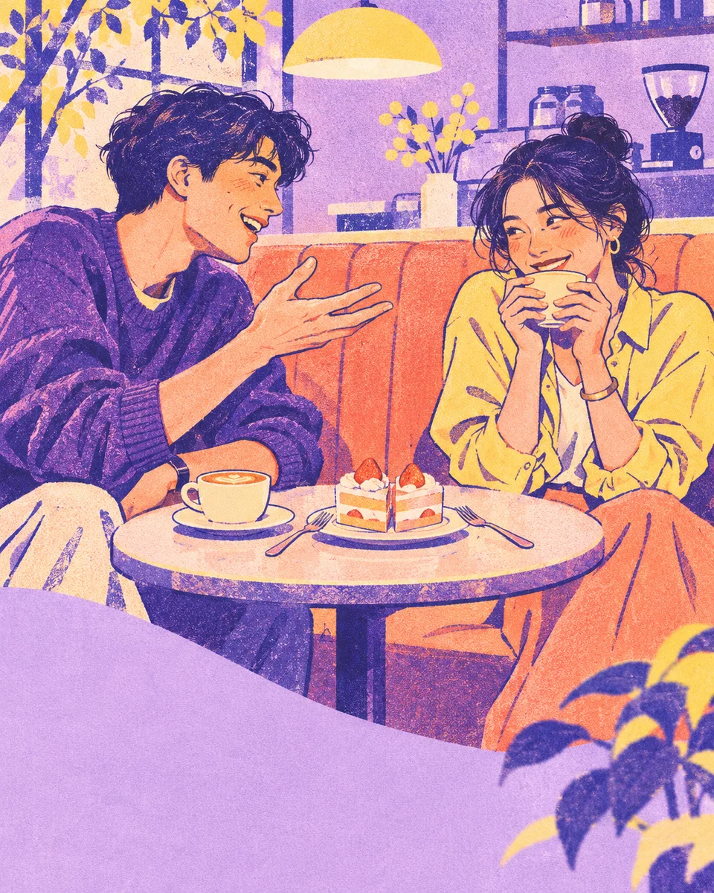

两人份相亲小剧场
你等的那条消息、没说出口的委屈，藏着怎样的你？走过 18 个相亲场景，看看谁让你心动，谁更能和你过好普通的一天。
36 个场景中抽 18 题 · 另有选填资料

启用浏览器的 JavaScript 后，就可以开始答题。
36 个原创场景分成 18 个主题，每次从每个主题抽一个场景，共 18 题。12 题描述四个相处维度，6 题描述沟通和支持方式。每个维度 3 题，按多数选择呈现倾向；换场景也可能改变回答，这只是当次自我观察，不是经过信效度验证的心理量表。另有个人、家庭与择偶期待等选填资料。结果先给出条件对照表，再分别介绍你的相处类型和建议了解的伴侣类型。年龄按自己的年龄段与相邻段举例，学历和收入按自己的资料给出认识起点，身高与眼缘沿用偏好并单独标明。工作、家庭与人格建议结合实际情况和情境回答生成。
双人模式在同一部设备上分开作答，逐项检查第一位的要求和第二位的条件，也反过来检查。互动和共同生活安排由两边的答案一起比较。
参考 Big Five 开源项目的模块结构、Gottman 的互动话题，以及中国婚恋研究选择观察方向。18 道原创题并非 Big Five 或 MBTI 量表，资料没有验证本站的题目与推荐规则。双人匹配分是符合项占已可比较项的比例，至少有六项可比较时才出分。「不限」不计，未填的项目和需要谈出同城计划的情形记为待确认。双方对是否要孩子有明确分歧时，先呈现议题。
单人报告没有候选人数据库，不估算婚配价值或成功概率。职业不能推断人品，年龄、身高和学历不能单独决定适配。想尝试收入更高一档时，按你填的最低预期或自己的收入档向上一档举例，双方意愿仍需要实际了解。
返回首页会清空这次的答卷。
图片只包含结果概览和题数。请在双方都同意后，再保存分享。